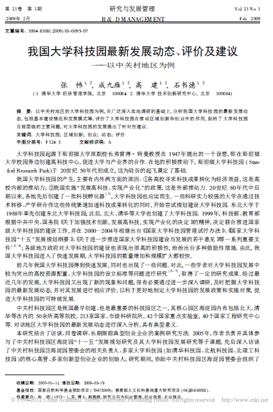

摘要
以中关村地区的大学科技园为例,在广泛深入实地调研的基础上,分析我国大学科技园的最新发展动态,包括基本建设情况和发展模式等;评价了大学科技园在推动区域创新和创业中的作用,剖析了大学科技园目前面临的主要问题,对大学科技园的发展提出了针对性建议.
参考文献
[1] 张帏. 中关村留学人员创业企业发展的瓶颈调研[J]. 中国软科学. 2007(08)
[2] 王伟,康建辉. 大学科技园区发展中的高校资源配置研究[J]. 科学学与科学技术管理. 2005(08)
[3] 陈静远,黄长春,左亮. 中国大学科技园与英国科技园建设和管理模式研究[J]. 科学学与科学技术管理. 2005(08)
[4] 夏劲,涂晶. 论设立大学科技园的标准[J]. 科学学研究. 2005(02)
[5] 林嵩,张帏,林强. 高科技创业企业资源整合模式研究[J]. 科学学与科学技术管理. 2005(03)
[6] 林嵩,张帏,邱琼. 创业过程的研究评述及发展动向[J]. 南开管理评论. 2004(03)
[7] 林强,姜彦福,王德保,冯冠平. 科技创新孵化器的管理模式研究——以深圳清华大学研究院为例[J]. 科学学与科学技术管理. 2003(08)
[8] 林强,姜彦福. 中国科技企业孵化器的发展及新趋势[J]. 科学学研究. 2002(02)
评论